library(ggplot2)Verteilungs Plotss & Erläuterung
Challenge CWM1
Einführung
In diesem Bericht werden die Plots aufgezeigt, welche für die Wahl der Verteilung benötigt wurden. Sowie unsere Erläuterung dazu.
Verteilungen
Verteilungen Zone 1
── Attaching core tidyverse packages ──────────────────────── tidyverse 2.0.0 ──
✔ dplyr 1.1.4 ✔ readr 2.1.5
✔ forcats 1.0.0 ✔ stringr 1.5.1
✔ lubridate 1.9.3 ✔ tibble 3.2.1
✔ purrr 1.0.2 ✔ tidyr 1.3.1
── Conflicts ────────────────────────────────────────── tidyverse_conflicts() ──
✖ dplyr::filter() masks stats::filter()
✖ dplyr::lag() masks stats::lag()
ℹ Use the conflicted package (<http://conflicted.r-lib.org/>) to force all conflicts to become errors
Loading required package: MASS
Attaching package: 'MASS'
The following object is masked from 'package:dplyr':
select
Loading required package: survivalZone 1 Masse
Zunächst wird der Hang 1 hinsichtlich der Masse untersucht.
Zuerst werden mit dem fitdistr-Package verschiedene Verteilungen auf den Datensatz der Masse angewendet um diese dann zu analysieren.
Alle Verteilungen werden dann mit einem Histogramm welches die Daten wiederspiegelt angezeigt. In einem zweiten Plot, der ein Cullen-Frey-Diagramm darstellt, werden die Datenpunkte zusammen mit den Verteilungen verglichen. Die Verteilungen, die am nächsten an den Beobachtungspunkten liegen, sind tendenziell kompatibler.
Diese beiden Vergleiche allein erlauben noch keine endgültige Entscheidung darüber, welche Verteilung am besten geeignet ist. Sie dienen jedoch dazu, die Auswahl der möglichen Verteilungen einzuschränken und eine Orientierung zu geben, mit welchen Daten gearbeitet wird.
Dabei zeigt sich, dass nur die Weibull- und die Lognormalverteilung in Frage kommen könnten.
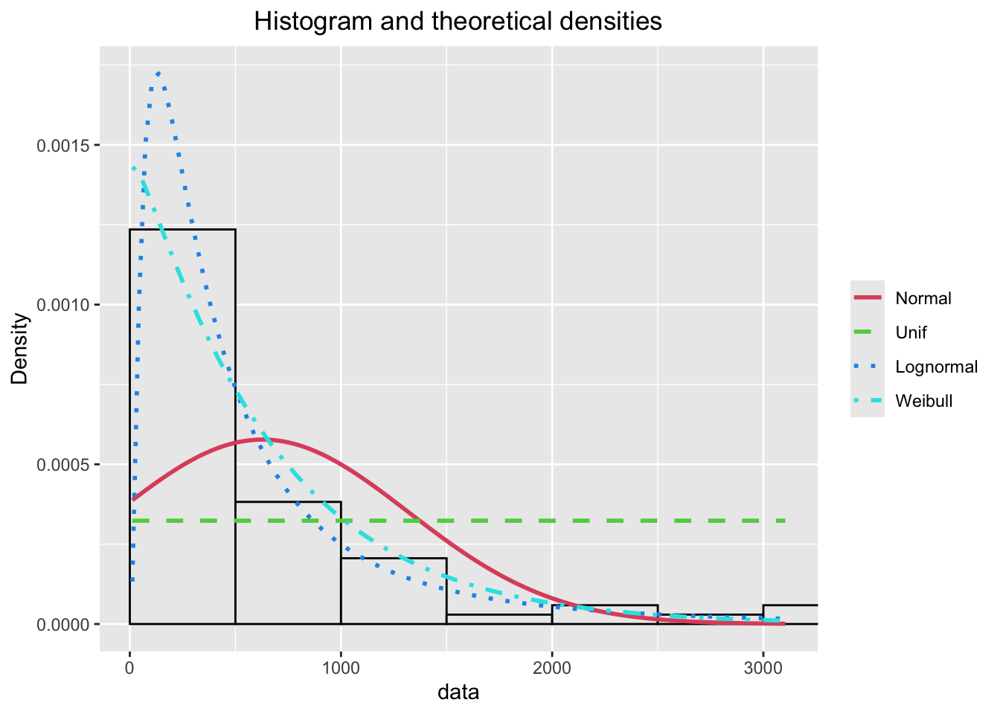
summary statistics
------
min: 12 max: 3104
median: 402.5
mean: 628.6324
estimated sd: 695.8847
estimated skewness: 2.161327
estimated kurtosis: 7.560251 Diese werden in einem Goodness-of-Fit-Test verglichen. Dazu müssen die CDF-, QQ- und PP-Plots betrachtet werden. Die Punkte in den Plots stellen den Vergleich der vorhandenen Daten auf der Y-Achse dar, im Vergleich zu den theoretischen Werten auf der X Achse, welche die Verteilung erzeugt.
Der QQ-Plot vergleicht die Quantile, der PP-Plot die Perzentile und der CDF-Plot die kumulative Verteilungsfunktion. Wie gut eine Verteilung zu den Daten passt, erkennt man an den Linien. Wenn die Punkte der Gegenüberstellung auf der Linie liegen, passt die Verteilung gut zu den Daten.
Mit der Funktion UnivariateML können verschiedene Verteilungen bereits im Vorhinein getestet werden, um herauszufinden, welche am besten zu den Daten passt. Diese Funktion vergleicht die Kompatibilität der Daten mit verschiedenen Verteilungen und bietet somit eine Möglichkeit, eine mögliche Passform für die vorliegenden Daten zu ermitteln. Diese Funktion unterstützt die Auswahl von Verteilungen
In diesem Fall wird die Lognormalverteilung empfohlen.
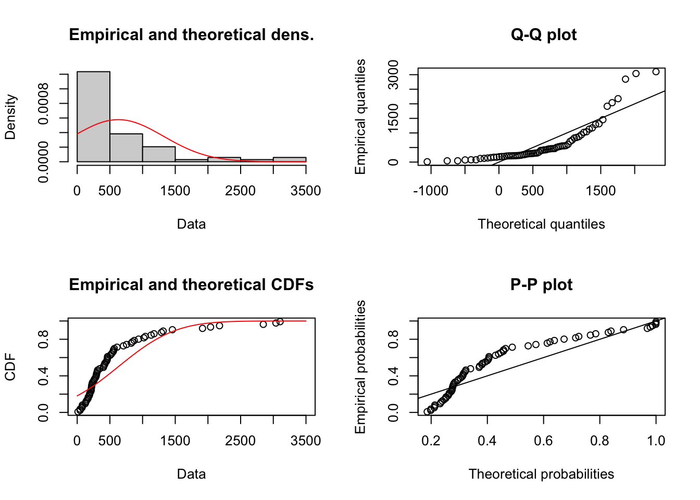
Maximum likelihood estimates for the Loglogistic model
shape rate
1.723909 0.002596 Vergleicht man die Masse am Hang 1 zwischen der Lognormalverteilung und der Weibullverteilung, so liegt die Lognormalverteilung nahe an der Linie, nur das letzte Quantil im QQ-Plot weicht deutlich ab. Bei der Weibullverteilung weichen die Punkte ebenfalls von der Linie ab, aber insbesondere das letzte Quantil liegt nahe an der Linie.
Trotz kleiner Abweichungen wird die Weibull-Verteilung gewählt. Größere Massen bedeuten ein höheres Risiko, daher ist es wichtiger, die schwersten Massen mit der Verteilung abzudecken.
Dieser Vorgang wird für die Auswahl bei allen Variablen wiederholt.
Zone 1 Geschwindigkeit
Durch die erste Analyse stellt sich heraus, dass viele Verteilungen passen könnten, Normalverteilung, Weibull, Exponential, Gamma oder Lognormal.
Der Vorschlag von UnivariateML ist die Normalverteilung.
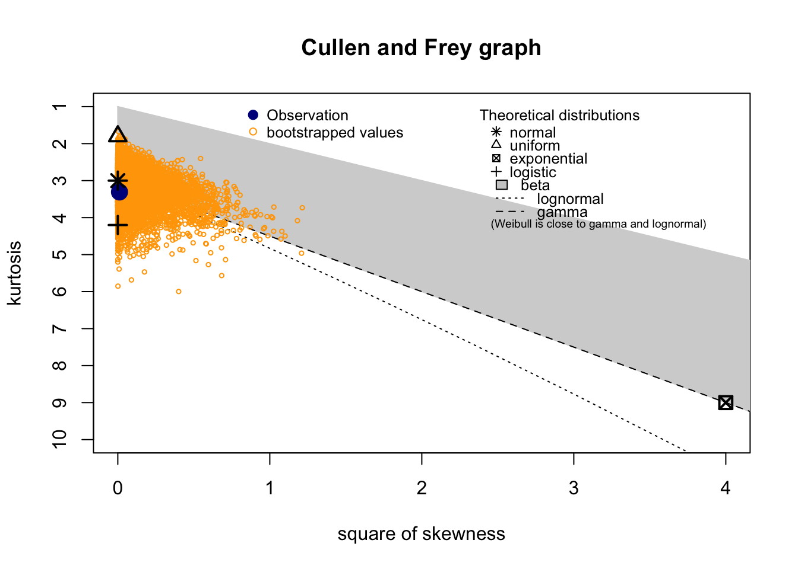
summary statistics
------
min: 3.6 max: 14.1
median: 8.8
mean: 8.788235
estimated sd: 1.989189
estimated skewness: -0.105241
estimated kurtosis: 3.30699 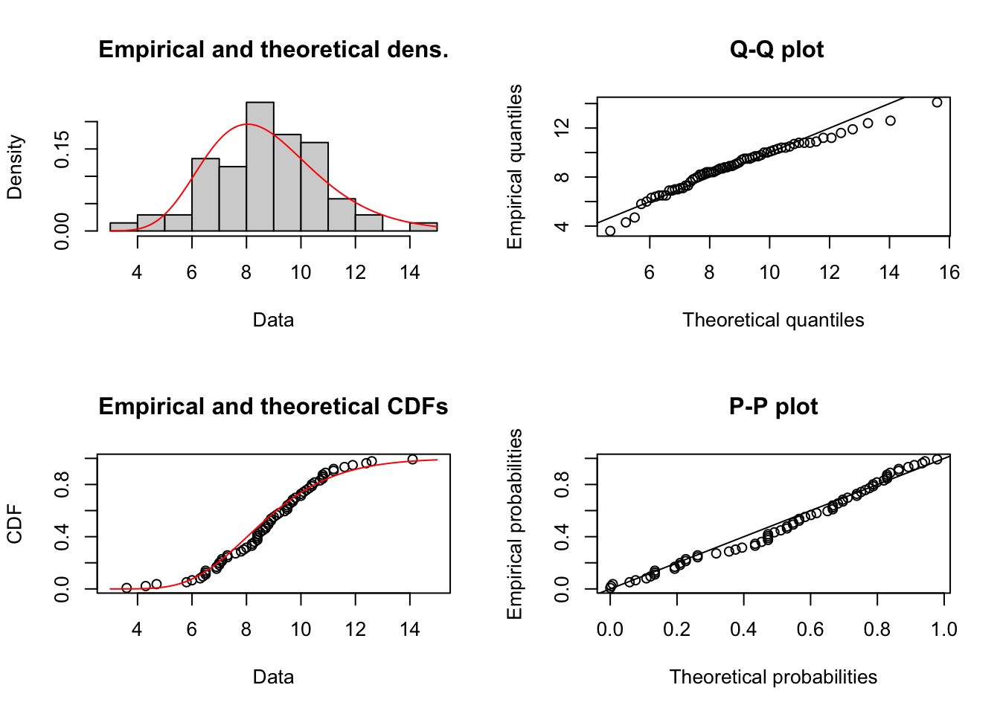
Maximum likelihood estimates for the Normal model
mean sd
8.788 1.975 Nach dem Abgleich der Plots ist klar, dass die Normalverteilung am genauesten passt. Die Punkte verlaufen fast durchgehend entlang der Linie, was auf eine gute Übereinstimmung mit den Daten hinweist. Besonders in den oberen Quantilen ist diese Verteilung am nächsten bei der Linie.
Zone 1 Zeitabstände
Die erste Analyse deutet in diesem Fall klar darauf hin, dass nur eine Exponential- oder Normalverteilung passend sein könnten. Der Vorschlag von UnivariateML ist die Exponentialverteilung.
summary statistics
------
min: 0 max: 113
median: 22
mean: 30.55224
estimated sd: 27.74903
estimated skewness: 0.944373
estimated kurtosis: 3.359452 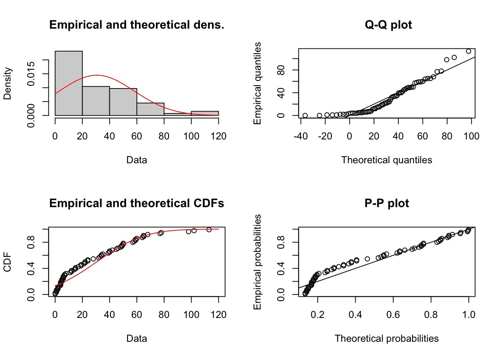
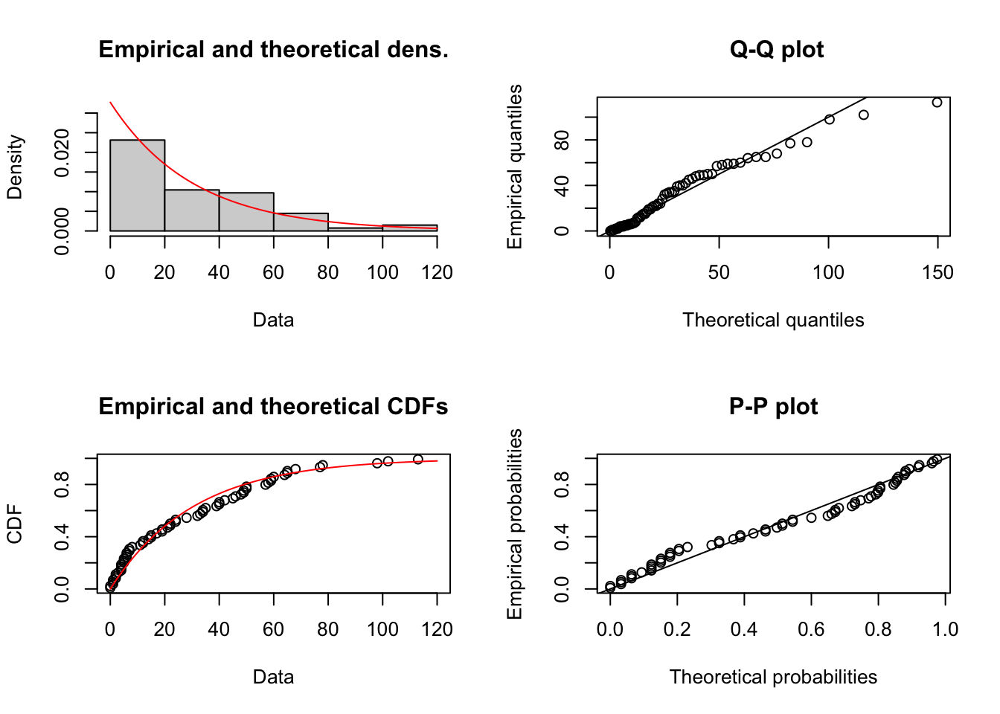
Maximum likelihood estimates for the Exponential model
rate
0.03273 Die Auswertung der Plots zeigt deutlich, dass die Exponentialverteilung am besten passt.
Die kleineren Quantile werden bei der Exponentialverteilung besser gedeckt. Bei den Zeitlichen Abstände sind die kleineren Quantile wichtiger, da weniger Zeitintervalle mehrere Steinschläge bedeuten und somit eine größere Gefahr darstellen.
Verteilungen Zone 2
Zone 2 Masse
Nach einer ersten Prüfung bleiben die Verteilungen Weibull, Gamma, Exponential und Lognormal zur Auswahl. Der Vorschlag von UnivariateML ist die Exponentialverteilung.
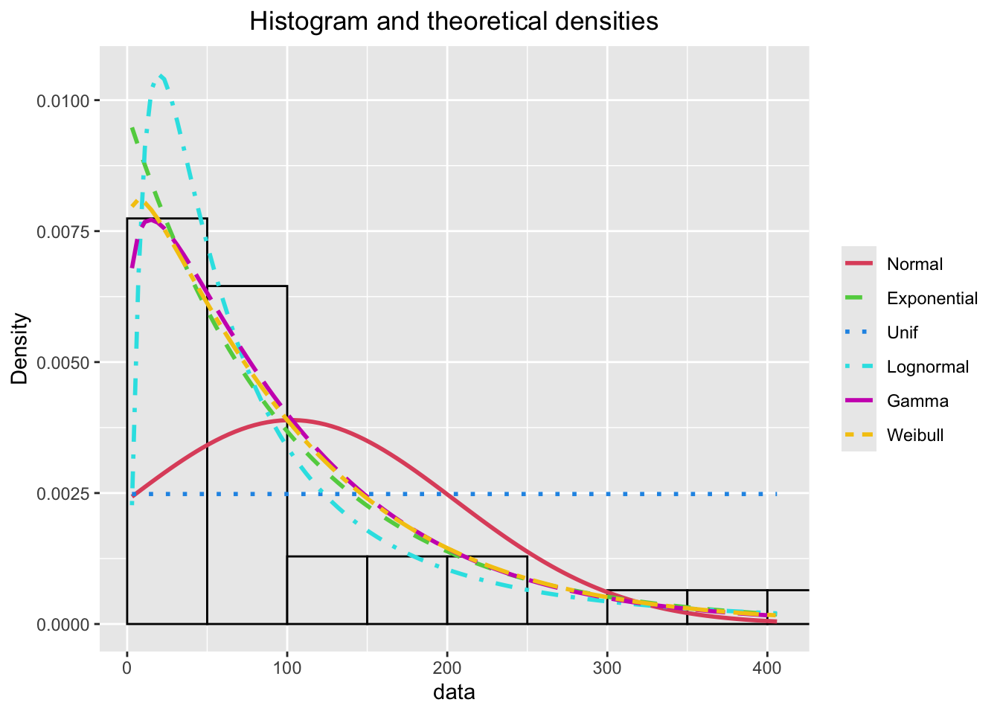

summary statistics
------
min: 3 max: 406
median: 58
mean: 102.4516
estimated sd: 104.1786
estimated skewness: 1.678832
estimated kurtosis: 5.174858 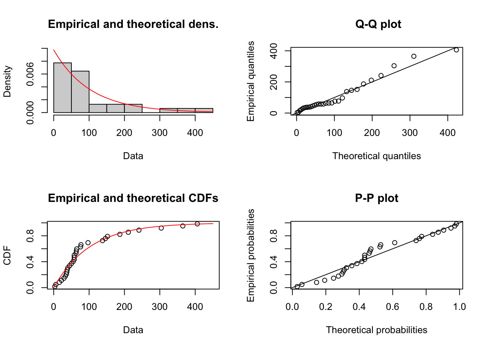
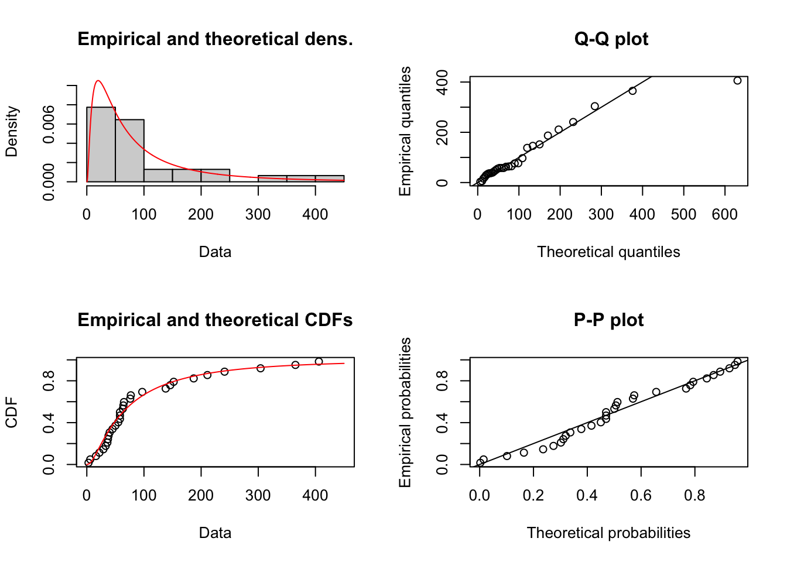
Maximum likelihood estimates for the Exponential model
rate
0.009761 Nach Bewertung der Plots wird die Exponentialverteilung gewählt. Gamma, Weibull sind ähnlich wie die Exponentialverteilung, decken aber die oberen Quantile schlechter ab. Lognormal liegt im Allgemeinen näher an der Linie, lässt aber das letzte Quantil aus. Auch am zweiten Hang ist die größere Masse ausschlaggebender.
Zone 2 Geschwindigkeit
Die Diagramme zeigen, dass viele Verteilungen ausgewählt werden können. Normal, Lognormal, Weibull und Gamma stehen zur Auswahl.
Der Vorschlag von UnivariateML ist die Weibullverteilung.

summary statistics
------
min: 24.9 max: 46.5
median: 39.2
mean: 37.96774
estimated sd: 5.389582
estimated skewness: -0.49904
estimated kurtosis: 2.574054 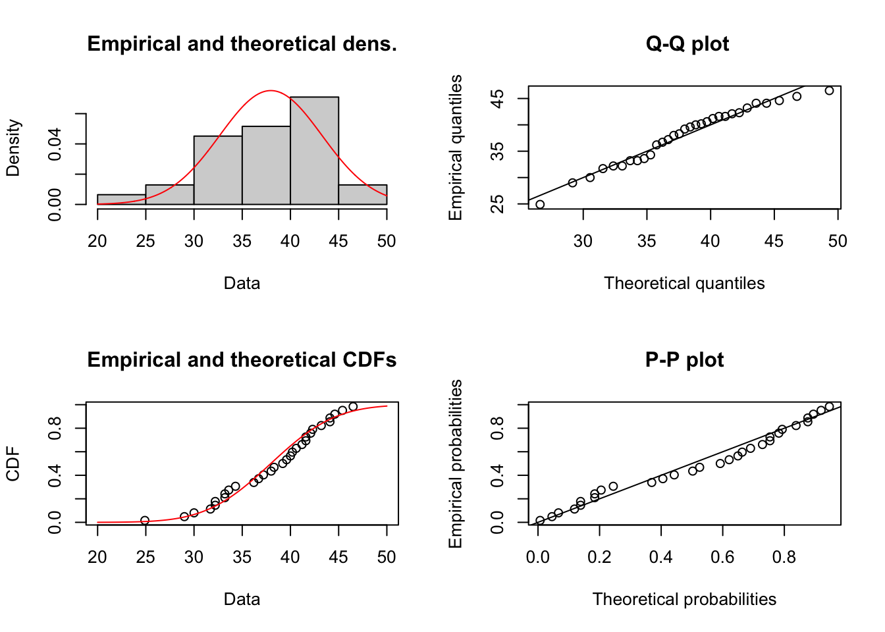
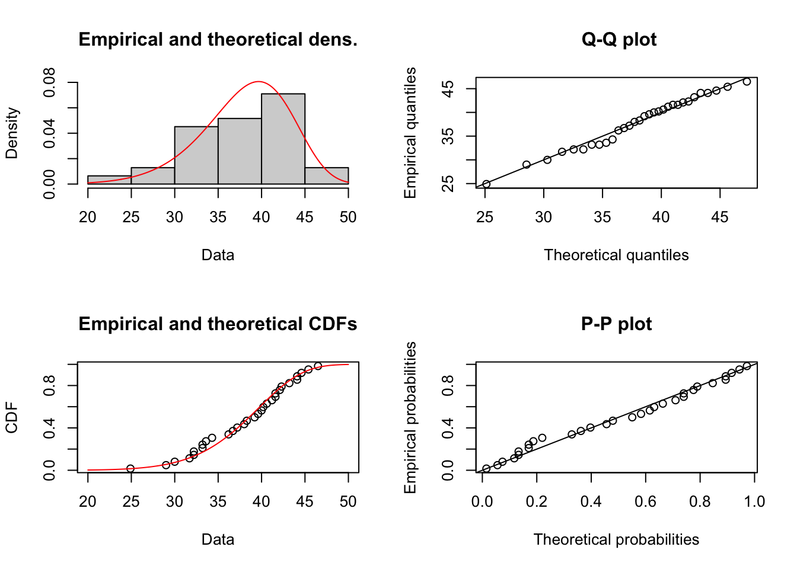
Maximum likelihood estimates for the Weibull model
shape scale
8.755 40.212 Die Auswertung zeigt, dass nur die Weibullverteilung die Daten umfangreich decken kann. Daher wird diese Verteilung gewählt.
Zone 2 Zeitabstände
In diesem Fall erkennt man ebenfalls, dass die Verteilungen Weibull, Gamma, Exponential und Lognormal zur Auswahl stehen. Der Vorschlag von UnivariateML ist die Gammaverteilung
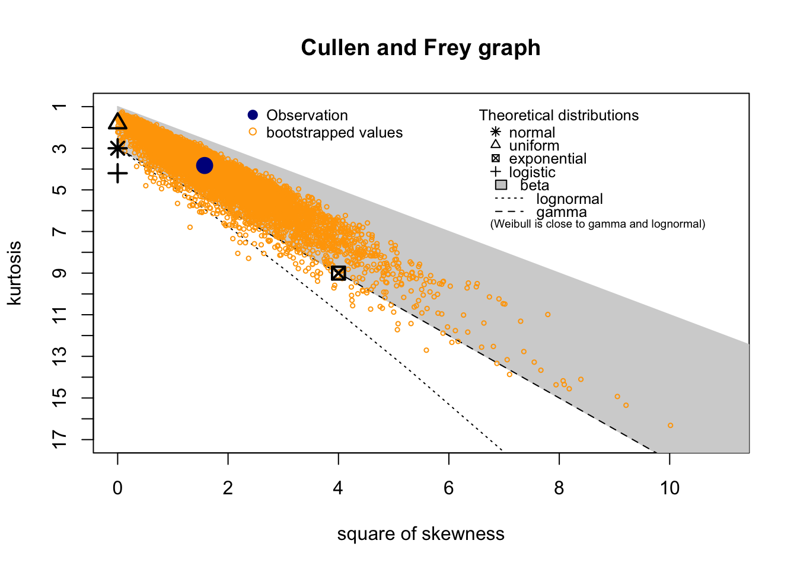
summary statistics
------
min: 7 max: 212
median: 55.5
mean: 68.53333
estimated sd: 55.00265
estimated skewness: 1.255227
estimated kurtosis: 3.828367 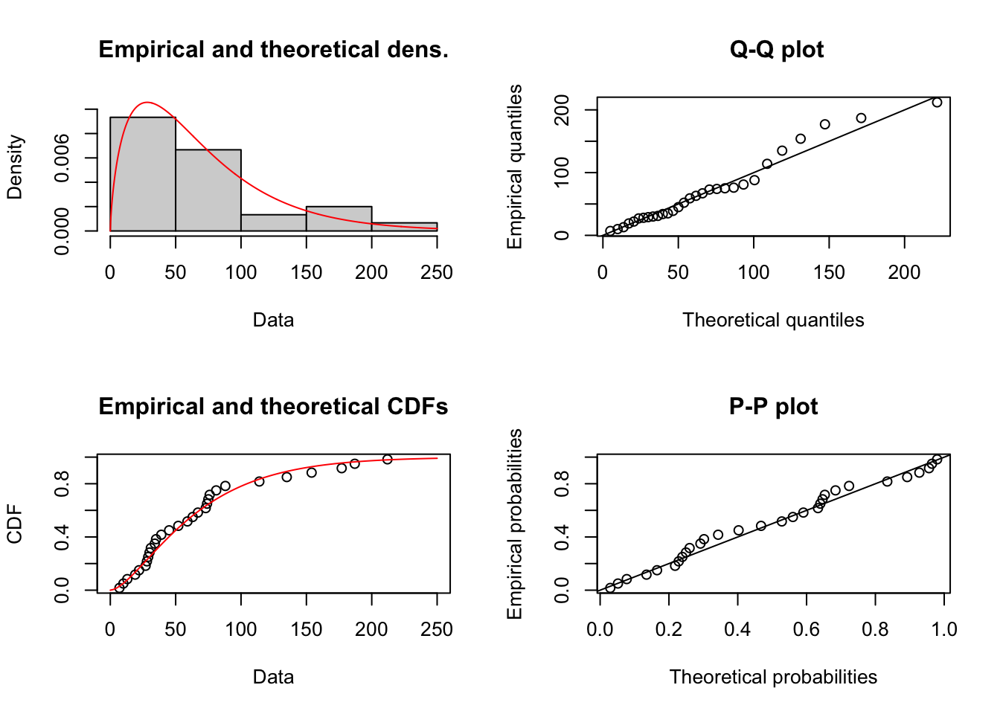
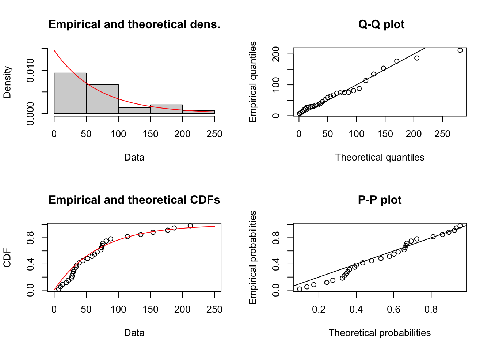
Maximum likelihood estimates for the Gamma model
shape rate
1.70124 0.02482 Beim Vergleich fällt schnell auf, dass Gamma- und Weibullverteilungen die genausten Modelle sind. Gewählt wird hier die Gammaverteilung, da diese sowohl der Empfehlung von UnivariateML entspricht als auch die unteren Quantile im Vergleich besser abdeckt.